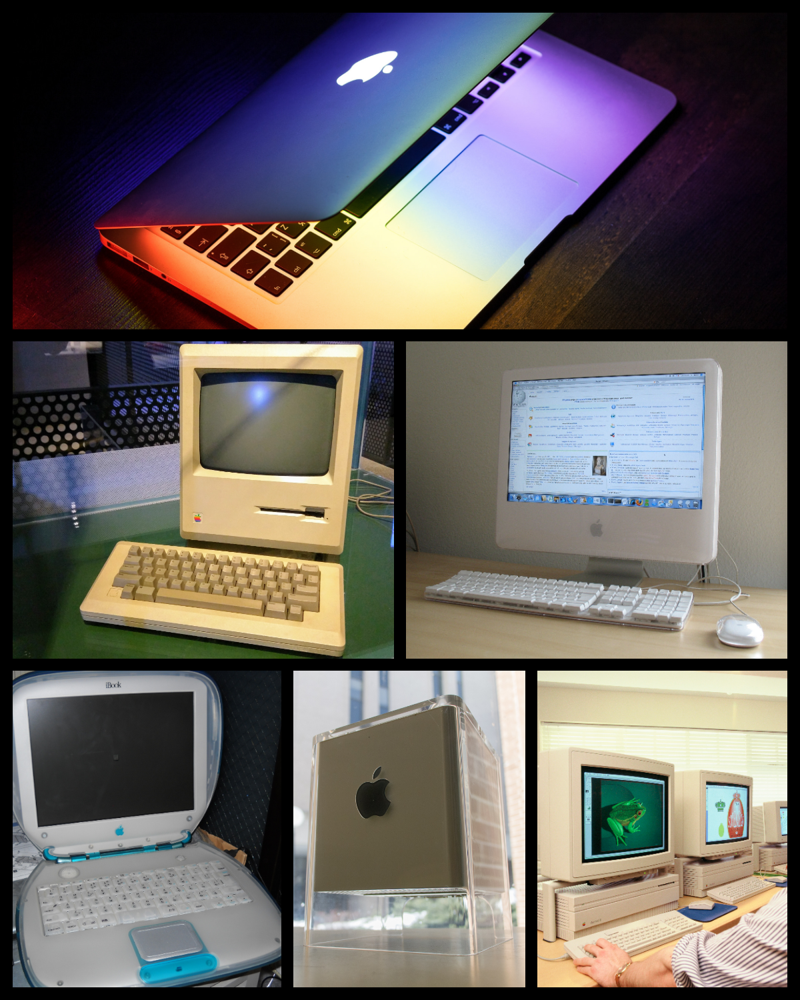

- 1978–84: Development and introduction
- 1984: Debut
- 1984–90: Desktop publishing
- 1990–98: Decline and transition to PowerPC
- 1998–2005: Revival
- 2005–present: Switch to Intel processors
-
| All kinds of Macintosh |
Consumer |
Professional |
| Portable |
Macbook air |
Macbook Pro |
| Desktop |
iMac, Mac Mini |
iMac Pro, Mac Pro |